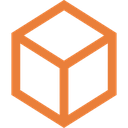
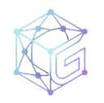
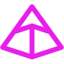
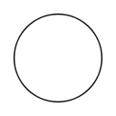
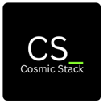
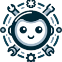
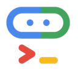
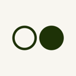

Best AI agents for coding in the terminal (2026)
Agents that live in your terminal: give them a task and they read files, run commands and propose changes. We list 95 tools for coding in the terminal below, each with a link-checked page, pricing as the maker states it and alternatives.
Updated
95 tools: 78 open source, 4 source-available, 6 free or freemium, 2 paid, usage-based or enterprise, 5 pricing on the maker's site.
MCP servers (20)
Paper Search MCP
MCP server and CLI that searches and downloads academic papers from arXiv, PubMed, bioRxiv, Semantic Scholar and other sources for research agents.
Added
MoonPay CLI (MoonAgents)
MoonPay's CLI, local MCP server and API that give AI agents non-custodial wallets, swaps, bridges, transfers and fiat on and off ramps.
Added
CC Switch
Desktop manager for Claude Code, Codex, Gemini CLI, OpenCode, OpenClaw and other coding agents that switches API providers in one click and manages MCP servers, skills and prompts.
Added

Repomix
CLI and web tool that packs an entire repository into a single AI-friendly file (with an MCP server) so coding agents and LLMs get full codebase context.
Added
MCP Inspector
Official developer tool for testing and debugging MCP servers through a web UI, CLI or terminal UI.
Added
MobileBuildMCP
Sentry's MCP server and CLI that gives coding agents build, test and run tools for iOS and macOS projects.
Added
Peekaboo
macOS CLI, menu-bar app and MCP server for screen capture, accessibility inspection and native UI automation by AI agents.
Added
MCPorter
TypeScript runtime and CLI for discovering and calling MCP servers from scripts, terminals and agents, or packaging them as standalone CLIs.
Added

CodeGraphContext
MCP server and CLI that index local code into a graph database so AI assistants can query code relationships.
Added
Container Use
Dagger's MCP server and CLI that gives each coding agent its own containerized environment so several can work in parallel safely.
Added
Google Workspace MCP
MCP server and CLI that gives AI assistants natural-language control of Gmail, Calendar, Drive, Docs, Sheets, Slides, Forms, Tasks and Chat.
Added
ripwire
Zero-dependency CLI and MCP server that gives coding agents a ranked call graph, blast radius and tests-to-run before and after edits.
Added
webclaw
Rust web extraction tool that turns sites into clean Markdown or JSON for agents, as a CLI, MCP server and REST API, with a hosted API.
Added
Gemini MCP Tool
MCP server that lets Claude and other assistants call the Gemini CLI to analyze large files and codebases with its big context window.
Added
Sentry MCP
Sentry's MCP server and CLI that give coding agents access to Sentry issues, errors and traces for debugging.
Added
Cloud Run MCP
Google Cloud's MCP server and Gemini CLI extension that lets AI agents deploy apps to Cloud Run.
Added
Pimlico AI
CLI and MCP server that lets coding agents manage a Pimlico smart-account infrastructure account, from balances and logs to sponsorship policies.
Added
REA
MCP server and CLI that lets coding agents reverse engineer native binaries, Electron and JavaScript apps, .NET assemblies and live websites, using Ghidra, Hopper or IDA under the hood.
Added
CircleCI MCP
CircleCI's MCP servers (hosted and CLI) for diagnosing build failures, inspecting runs and managing CI pipelines from coding agents.
Added
Sharpe Labs
Free crypto trading intelligence terminal (derivatives, funding, on-chain, sentiment) with an MCP server for AI agents.
Added
Agent frameworks and SDKs (10) See the full list →
Pi
Minimal, extensible open-source terminal coding agent and agent toolkit from Earendil, with a multi-provider LLM API, TypeScript SDK, RPC mode and installable extensions, skills and themes.
Added
HyperFrames
HeyGen's open-source framework that renders HTML, CSS and animations into deterministic MP4 videos, usable from a CLI or by coding agents through skills.
Added
Botpress
Platform for building and deploying LLM-powered chatbots and agents, with a visual studio, integrations hub, CLI and SDK.
Added
Claude Agent SDK (Python)
Anthropic's Python SDK for building agents on Claude Code's agent loop, with the CLI bundled, custom tools and hooks.
Added
OpenGAP
Framework-agnostic, git-native standard and CLI for defining AI agents so a repository becomes a runnable agent.
Added

Pydantic Deep Agents
Self-hosted terminal AI assistant and Python framework on Pydantic AI, with tool calling, sandboxed execution, multi-agent teams and checkpoints.
Added

Open Interpreter
Terminal coding agent forked from OpenAI's Codex and tuned for low-cost and open-weight models, with switchable harness modes that imitate tools like Claude Code.
Added
Agent-Native (Builder.io)
Open-source TypeScript framework for building agents that come with their own app UI; each action is shared by the UI, agent, API, CLI, MCP and A2A.
Added
Munder Difflin
Free, open-source harness that runs Claude Code, Codex, Gemini CLI and other terminal agents together like an office.
Added
Open Connector
Open-source auth gateway connecting SaaS apps to AI agents via SDK, CLI and MCP.
Added
Local and self-hosted (7) See the full list →
Magpie
Free, open-source menu bar app and local gateway that lets any coding agent (Claude Code, Codex, Gemini CLI, OpenCode and 60+ more) use any model provider or subscription, with failover when a quota runs out.
Added
LongMemory
Local-first memory engine for agents that keeps durable, time-aware memories in SQLite and serves them to Claude, Copilot, Codex and others over MCP, CLI or HTTP.
Added
CyberStrike
Terminal agent for authorized penetration testing that runs recon, vulnerability discovery and reporting with specialized security agents on your own LLM.
Added

Mercury Agent
Self-hosted personal AI agent with a written personality, local memory, permission-gated tools and token budgets, reachable via CLI or Telegram.
Added
Open Terminal
Self-hosted terminal service from the Open WebUI team that gives AI agents an API to run commands, manage files and execute code.
Added

gptme
Terminal agent with local tools that writes code, runs commands, browses the web and uses vision.
Added
Open Dungeon Master
Free multiplayer D&D 5e app with app-enforced rules, where an AI or human runs the table using a local model, API key or CLI agent.
Added
Code review (5)
Open Code Review
Alibaba's AI code review CLI that combines deterministic pipelines with an LLM agent to post line-level comments on Git diffs, using OpenAI or Anthropic models.
Added
Desktop Commander MCP
MCP server that gives Claude and other clients terminal control, process management, file search and diff-based file editing on your computer.
Added
GitKraken MCP
GitKraken's MCP server, via the GitKraken CLI, for managing repos, pull requests and issues across GitHub, GitLab and Bitbucket.
Added
Qodo
AI code review and testing agents that work in the IDE, the terminal and pull requests to catch issues before merge.
Added
Hunk
Review-first terminal diff viewer for checking what coding agents changed.
Added
More tools (53)
ClawX
Desktop app that puts a graphical interface on OpenClaw agents so you can set up and run them without the terminal.
Added
Warp
Agentic development environment built from the terminal, now open source, for running coding agents and cloud software factories.
Added
CLI-Anything
Open-source project from HKUDS that generates agent-native command-line interfaces for existing software, codebases and web APIs, with CLI-Hub, a registry of community CLIs that coding agents can install and drive.
Added
skills.sh
Vercel Labs' open-source CLI (npx skills) and directory for finding, installing and sharing agent skills across Claude Code, Codex, Cursor, OpenCode and 75+ other coding agents.
Added
Kilo Code
Open-source AI coding agent for VS Code, JetBrains, the CLI and the cloud that works with 500+ models at no markup.
Added
Moli
Lightweight Rust headless browser for AI agents that fetches pages, searches and extracts content, usable via CLI, CDP or WebDriver.
Added
Hermes WebUI
Lightweight web and mobile interface for the Hermes Agent with full parity with its CLI experience.
Added
RocketRide
AI pipeline engine with a C++ core and 50+ Python nodes for building, debugging and deploying LLM workflows and agents from VS Code or the CLI.
Added
Hermes One
Community desktop app for installing, configuring and chatting with Hermes Agent without managing it from the terminal.
Added
AIO Sandbox
All-in-one Docker sandbox for AI agents that combines a browser, shell, files, MCP, VS Code Server and Jupyter in one container.
Added

Agents CLI
Google's CLI and skills that teach coding assistants to build, evaluate and deploy agents on Google Cloud and the Gemini platform.
Added
coucou
Mac notch and phone companion that monitors your Claude Code, Codex, Cursor and Gemini CLI sessions and lets you approve permissions on the go.
Added
TUIOS
Terminal window manager with tiling panes, persistent sessions and one inbox where coding agents report their state and message each other.
Added
FrontierAgent
Open-source agent runtime and terminal app for long-horizon research and file work, with single-agent ReAct and parallel agent-team modes.
Added
AutoDev
Multi-agent development platform built on Kotlin Multiplatform for research, coding, review and data queries across IntelliJ, VS Code, CLI and more.
Added
Playwriter
Chrome extension and CLI or MCP that lets agents control your own logged-in browser by running Playwright snippets.
Added
Metorial
Open-source identity and access layer that connects AI agents to 1,200+ integrations via MCP, CLI or API with auth, permissions and observability.
Added
Compozy
Operating system for AI agents that turns Claude Code, Codex, Gemini CLI and Cursor into a team with task handoff, loops, jobs and shared memory.
Added
Intelligent Terminal
Experimental fork of Windows Terminal with native integration for ACP-compatible agent CLIs.
Added
Ante
Self-contained Rust terminal coding agent from Antigma Labs that works with any model and has no runtime dependencies.
Added
CLI Agent Orchestrator
AWS Labs tool that coordinates several coding CLIs such as Claude Code, Kiro and Codex as a team, each in its own tmux session.
Added

Mirror CLI
Reflection AI's terminal coding agent that reads code, edits files and runs commands in isolated git worktrees, using the open-weight Beam model by default.
Added
Orke
BOMTOBE's free desktop workspace for Claude Code, Codex and other coding agents: terminal sessions, an in-app browser the agent can use, a Git review window and scheduled AI employees.
Added
Factory
Agent-native software development platform whose Droids write code, run tests and handle deployments from the IDE, terminal or Slack.
Added
MiMo Code
Xiaomi's terminal coding agent with persistent project memory across sessions; works with any major model provider and is tuned for Xiaomi's MiMo models.
Added
opencode
Open-source terminal coding agent that works with many model providers.
Added
Claude Code
Anthropic's terminal coding agent that edits code, runs commands and handles git.
Added
OpenAI Codex CLI
OpenAI's open-source coding agent for the terminal; also runs in the cloud.
Added
Gemini CLI
Google's open-source terminal agent powered by Gemini.
Added
Codewhale
Rust agent engine and terminal coding client with model choice, tool approvals and review flows.
Added
Oh My Pi
Terminal coding agent with IDE features wired in, from Stencil Labs.
Added
AionUi
Open-source desktop cowork app that gives a GUI to CLI agents like Claude Code, Codex, OpenCode and others.
Added
Google Workspace CLI
Official Google Workspace command-line tool for Drive, Gmail, Calendar, Docs and more, usable by agents.
Added
OpenCLI
Turns websites into CLI commands and lets agents use your logged-in browser.
Added
Crush
Charm's terminal coding agent with a polished TUI, multiple models and MCP support.
Added
Qwen Code
Open-source terminal coding agent from the Qwen team.
Added
NVIDIA OpenShell
Sandboxed runtime for autonomous agents with declarative YAML policies on file, network and credential access.
Added
Terax
Lightweight terminal-first AI development environment.
Added
Worktrunk
CLI for managing Git worktrees so several AI agents can work in parallel.
Added
mini-SWE-agent
Tiny 100-line agent that solves GitHub issues or helps on the command line, from the SWE-agent team.
Added
Tokscale
Tracks token usage across AI coding agents from your terminal.
Added
Entire CLI
CLI that captures AI agent sessions alongside your Git commits.
Added
Unity MCP
MCP tools and CLI that let AI agents develop and test inside the Unity engine.
Added
Mirage
Virtual terminal environment for AI agents.
Added
Grok CLI
Open-source coding agent for the Grok API.
Added
Chaterm
Open-source AI terminal for deploying, troubleshooting and automating cloud infrastructure.
Added
Jevgrep
CLI that finds relevant repo files and excerpts from natural-language questions for coding agents; claims ~40% cheaper agent runs.
Added
Nanocoder
Community-built open coding agent for your terminal.
Added
Coddo
Desktop app that puts a visual interface and voice input on top of terminal coding agents.
Added
Aider
Pair-programming agent in your terminal that commits changes to git.
Added
Amp
Agentic coding tool for the terminal and editor.
Added
MyShell
Platform to build, share and use AI agents and apps.
Added
NVIDIA Open Agent Safety Platform
Reference stack pairing OpenShell with NVIDIA Sentry on BlueField-4 DPUs for hardware-level agent monitoring.
Added
GitHub repos (86)
| Repo | GitHub stars | Licence | Last push |
|---|---|---|---|
| 301,645 | MIT | 2026-10-19 | |
| 213,329 | MIT | 2026-10-19 | |
| 150,707 | Proprietary (All rights reserved; Anthropic Commercial Terms of Service) | 2026-10-18 | |
| 145,685 | MIT | 2026-10-19 | |
| 129,112 | Apache License 2.0 | 2026-10-19 | |
| 116,073 | MIT | 2026-10-19 | |
| Gemini CLI ↗ | 107,334 | Apache License 2.0 | 2026-10-16 |
| Open Interpreter ↗ | 68,591 | Apache License 2.0 | 2026-10-11 |
| HyperFrames ↗ | 66,201 | Apache License 2.0 | 2026-10-19 |
| Warp ↗ | 65,511 | — | 2026-10-19 |
| 54,399 | Apache License 2.0 | 2026-09-22 | |
| 47,560 | Apache License 2.0 | 2026-10-19 | |
| Codewhale ↗ | 41,093 | MIT | 2026-10-19 |
| Oh My Pi ↗ | 35,686 | MIT | 2026-10-19 |
| 35,459 | MIT | 2026-10-09 |
Top 15 of 86 by stars. Stars and licence come from each repo, checked when the listing was last verified.
Related tasks
Popular with: Developers · Related searches: AI coding agents for the terminal (CLI)
Tools are matched to tasks by category, use cases and what each tool says it does. Missing one? Submit it free.